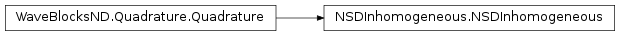

NSDInhomogeneous¶
About the NSDInhomogeneous class¶
The WaveBlocks Project
@author: R. Bourquin @copyright: Copyright (C) 2010, 2011, 2012, 2013, 2014, 2015, 2016 R. Bourquin @license: Modified BSD License
Inheritance diagram¶
Class documentation¶
-
class
WaveBlocksND.NSDInhomogeneous(QR=None)[source]¶ -
__init__(QR=None)[source]¶ Initialize the numerical steepest descent transformation for quadrature of highly oscillatory overlap integrals.
Parameters: QR – Typically one uses an instance of GaussHermiteOriginalQR.
-
build_bilinear(Pibra, Piket)[source]¶ Convert the oscillator
 occuring in the integral
occuring in the integral ![\langle\phi_k\left[\Pi_k\right] | \phi_l\left[\Pi_l\right]\rangle](../_images/math/1548b37da773e0afbff5ebcc66013ec45972314d.png) into a bilinear form
into a bilinear form
 .
.Parameters: - Pibra – The parameters
 from the ‘bra’ packet.
from the ‘bra’ packet. - Piket – The parameters
 from the ‘ket’ packet.
from the ‘ket’ packet.
Returns: Three arrays: a matrix
 of shape
of shape  ,
a vector
,
a vector  of shape
of shape  and a scalar value
and a scalar value  .
.- Pibra – The parameters
-
do_nsd(row, col)[source]¶ Evaluates by numerical steepest descent the integral
 for a polynomial
function
for a polynomial
function  with
with  .
.Parameters: - row – The index
 of the component
of the component  of
of  .
. - row – The index
 of the component
of the component  of
of  .
.
Returns: A complex valued matrix of shape
 .
.- row – The index
-
get_description()[source]¶ Return a description of this quadrature object. A description is a
dictcontaining all key-value pairs necessary to reconstruct the current instance. A description never contains any data.
-
get_qr()¶ Return the
QuadratureRulesubclass instance used for quadrature.Returns: The current instance of the quadrature rule.
-
initialize_operator(operator=None, matrix=False, eval_at_once=False)[source]¶ Provide the operator part of the inner product to evaluate. This function initializes the operator used for quadratures and for building matrices.
Note that the operator must not have residues and can be maximally polynomial but not exponential.
Parameters: - operator – The operator of the inner product.
If
Nonea suitable identity is used. - matrix – Set this to
True(Default isFalse) in case we want to compute the matrix elements. For nasty technical reasons we can not yet unify the operator call syntax. - eval_at_once (Boolean, default is
False.) – Flag to tell whether the operator supports theentry=(r,c)call syntax.
- operator – The operator of the inner product.
If
-
initialize_packet(pacbra, packet=None)[source]¶ Provide the wavepacket parts of the inner product to evaluate. Since the quadrature is inhomogeneous, different wavepackets can be used for the ‘bra’ as well as the ‘ket’ part.
Parameters: - pacbra – The packet that is used for the ‘bra’ part.
- packet – The packet that is used for the ‘ket’ part.
-
mix_parameters(Pibra, Piket)[source]¶ Mix the two parameter sets
 and
and  from the ‘bra’ and the ‘ket’ wavepackets
from the ‘bra’ and the ‘ket’ wavepackets ![\Phi\left[\Pi_i\right]](../_images/math/4ebbd138d74ec566a2838325c988a614d1dd1276.png) and
and ![\Phi^\prime\left[\Pi_j\right]](../_images/math/db14dff0f9663705d33ffd6ce75ba3ec1762fc25.png) .
.Parameters: - Pibra – The parameter set from the bra part wavepacket.
- Piket – The parameter set from the ket part wavepacket.
Returns: The mixed parameters
 and
and  . (See the theory for details.)
. (See the theory for details.)- Pibra – The parameter set
-
perform_build_matrix(row, col)[source]¶ Computes by standard quadrature the matrix elements
 for a general function
with .
for a general function
with .Parameters: - row – The index of the component of .
- row – The index of the component of .
Returns: A complex valued matrix of shape
.- row – The index
-
perform_quadrature(row, col)[source]¶ Evaluates by numerical steepest descent the integral
for a polynomial
function with .Parameters: - row – The index of the component of .
- row – The index of the component of .
Returns: A single complex floating point number.
- row – The index
-
prepare(rows, cols)[source]¶ Precompute some values needed for evaluating the quadrature
 or the corresponding
matrix over the basis functions of and .
or the corresponding
matrix over the basis functions of and .Parameters: - rows – A list of all with
 selecting the for which te precompute values.
selecting the for which te precompute values. - cols – A list of all with
 selecting the for which te precompute values.
selecting the for which te precompute values.
Note that the two arguments are not used in the current implementation.
- rows – A list of all
-
set_qr(QR)¶ Set the
QuadratureRulesubclass instance used for quadrature.Parameters: QR – The new QuadratureRuleinstance.
-